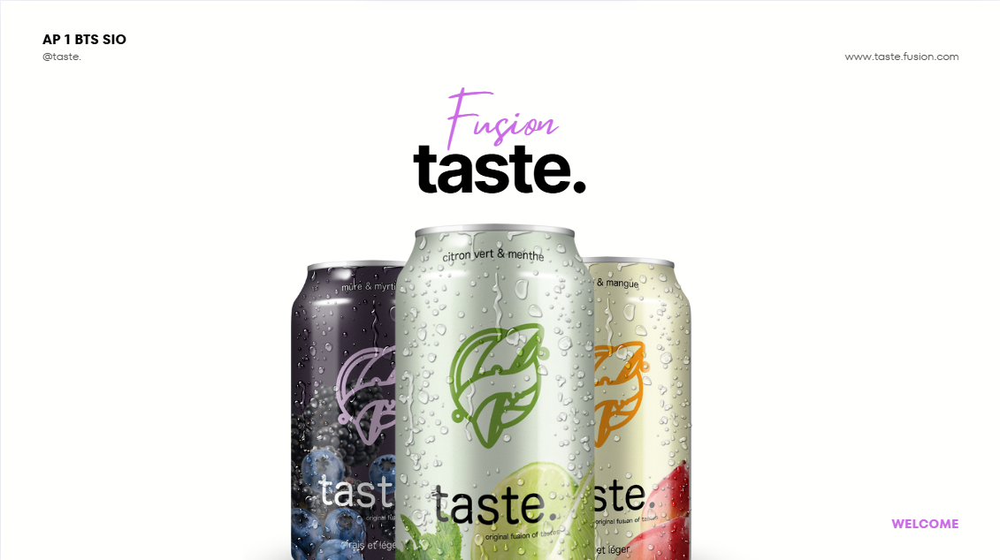
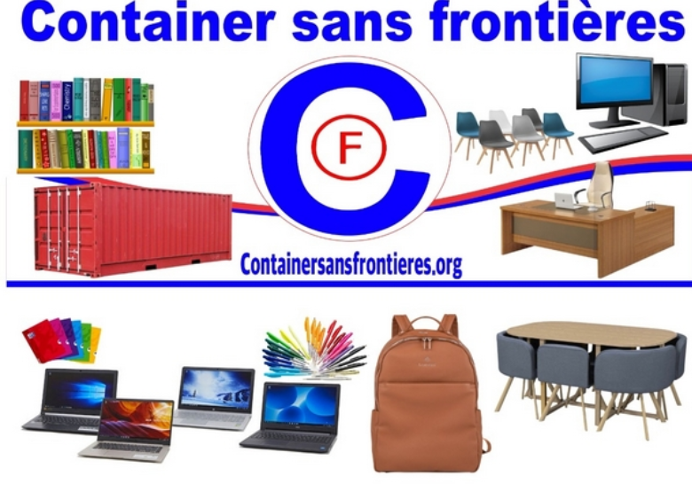

Mes documentations techniques :

Atelier de Professionnalisation 1
Création d'une entreprise fictive, Taste Fusion, vendant des boisons énergisante

Outil de veille
Google Alerts est un service gratuit permettant de faire la veille technologique
Inventaire d'une baie informatique
Inventaire détaillé des équipements présents dans une baie informatique.

Documentation GLPI
Cette documentation explique comment installer et utiliser le service GLPI
Documentation Trello
Cette documentation explique comment utiliser le Trello

Documentation gestion association CSF
Cette documentation montre les différentes pages avec leur utilisation de l'application de gestion de l'association CSF